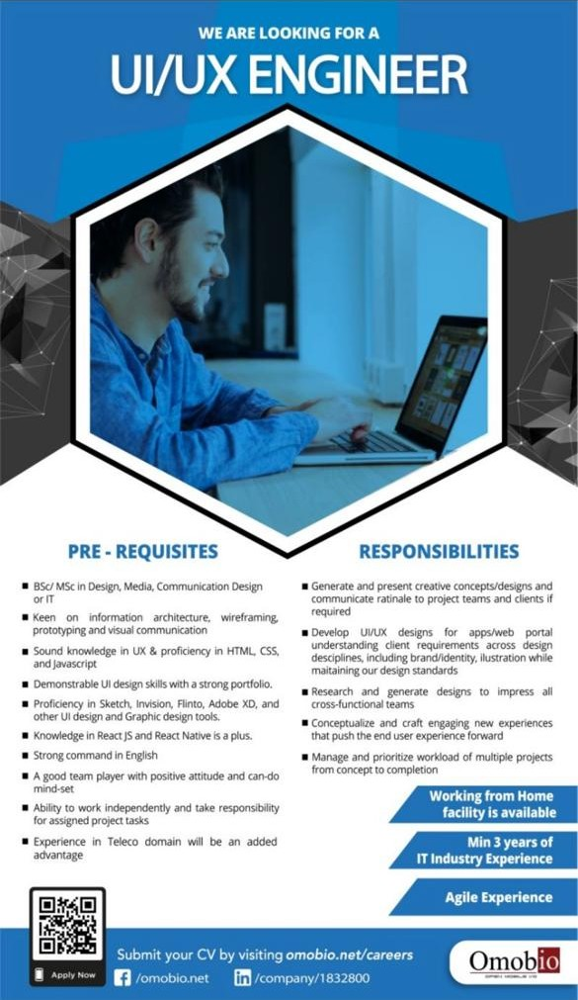

Effective Interview Techniques
Developing confidence and competence in professional interview situations.
Interview Preparation Strategies
Company Research
Understanding the organization and role
Common Questions
Preparing for typical interview questions
STAR Method
Structured approach to answering questions
Questions to Ask
Preparing insightful questions for interviewers
Key Skills Developed
- Professional communication and body language
- Articulating skills and experiences effectively
- Handling difficult questions with confidence
- Building rapport with interviewers
- Following up professionally after interviews
Pro Tip: Practice with mock interviews to build confidence and receive constructive feedback.
Cover Letter
Job Advertisment
Cv
Documents prepared for mock interview